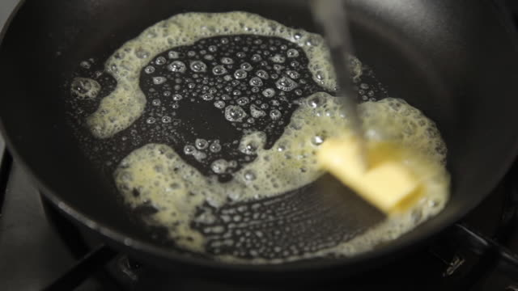
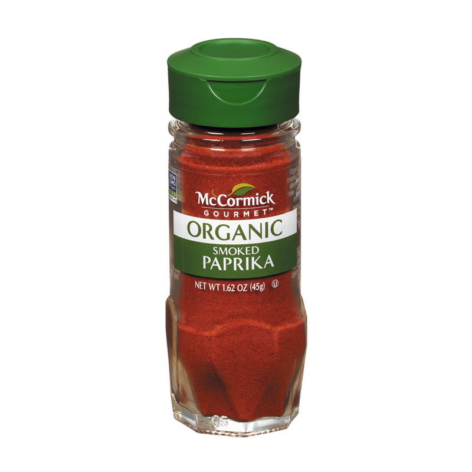

Welcome Food Lovers! This is my personalized and easy family recipe for scrambled eggs. If you follow the insturctions throughly in 15 minutes you will satisfy your pallets with an extrodinary dish. Simple and inexpensive, this recipe offers you the best price/quality ratio breakfeast. So Enjoy ..
Ingridients
- Eggs
- Butter
- Milk
- Shreded Cheddar
- Salt
- Pepper
Instructions
Step 1

For starters, crack four eggs on a small bowl. Add a 2/3 cup of milk, and make sure to stir well. When done stiring add 1/2 cup of shreded cheddar.
Step 2
Add 3 small spoons of butter on a small frying pan. Make sure the butter is spread to prevent your eggs from sticking. Then let the butter melt completely before pouring your eggs.
Step 3

Pour the eggs onto a frying pan. Begin slowly stirring as the eggs cook. Add another 1/2 cup shredded cheddar. Cook for 5 minutes.
Step 4

Now you have one more step before you can enjoy your delicious scrambled eggs! Add a pinch of salt and pepper, but before you start eating don't forget to consult our weekly secret ingridient to make your recipe's even tastier.
Secret Ingridient
Every week we have a new secret ingridient added to our recipes. If you would like to know this week's secret ingridient click here!
